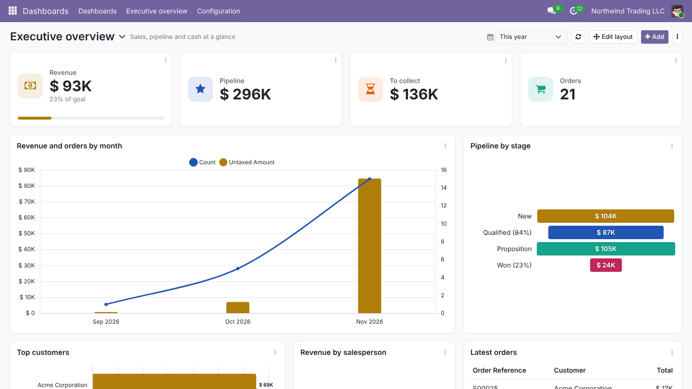
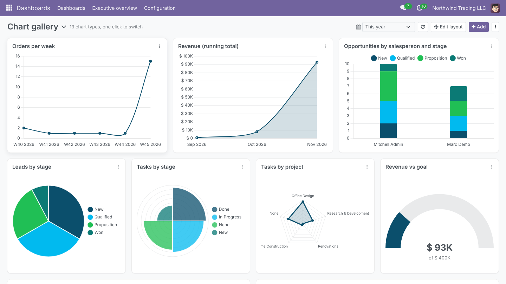
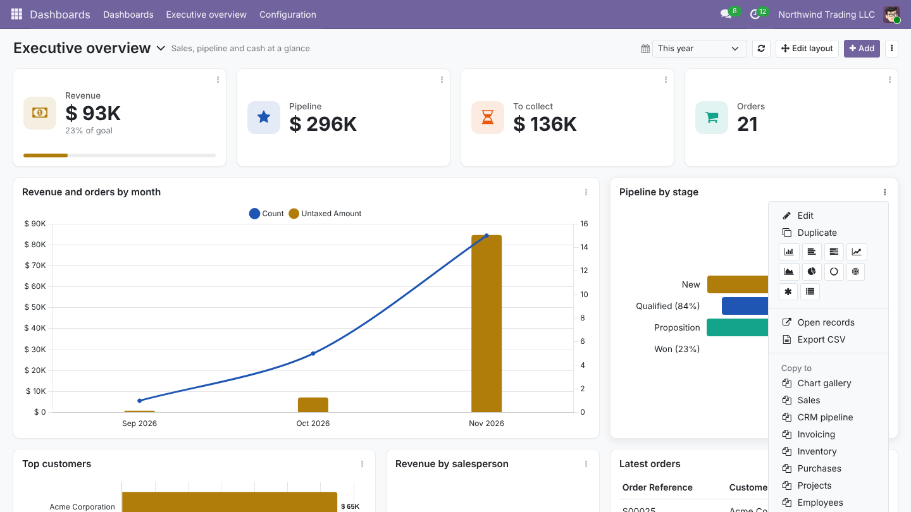
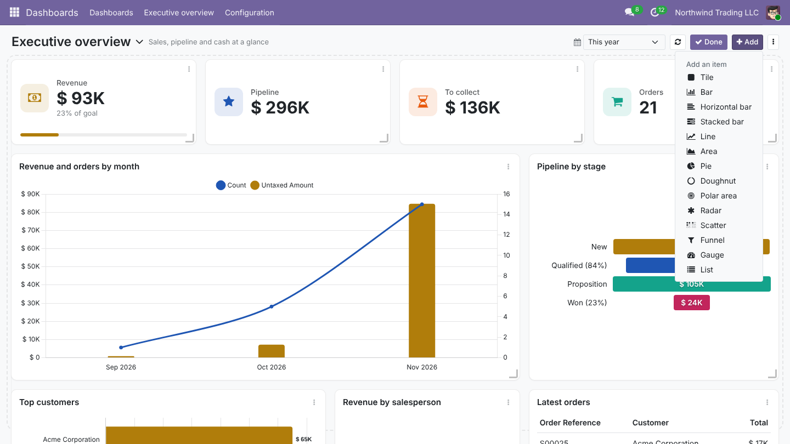
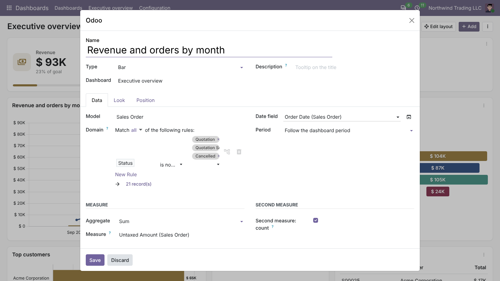
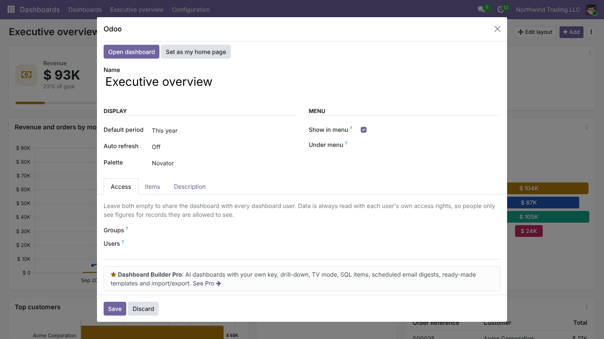

KPI tiles with the change against the previous period, 13 chart types and lists, a period filter and drag and drop. Share each dashboard with the right people; everyone sees only figures they are allowed to see.

Pick a model, a measure and a group by. No code, no SQL.
Figures are read as the user, with Odoo's record rules.
Unlimited dashboards and items, Community and Enterprise.
Bar, horizontal bar, stacked, line, area, pie, doughnut, polar area, radar, scatter, funnel, gauge and lists. Change the type of any item from its menu without touching its data.


Edit, duplicate, switch chart type, copy or move to another dashboard, open the records behind it, export CSV or an image.
Switch to edit mode, drag items by their title and resize them from the corner. Other items make room and the layout is saved at once. On a phone, items stack in one column.


Pick a model, add a filter with the usual domain editor, choose what to measure and how to group it. Filters can use the current user and company.
Share each dashboard with groups or users and add it to any menu. Figures are always read with each user's own access rights, so people only see totals of records they may see.

Build dashboards from a sentence with your own Claude or OpenAI key, ask the AI to explain a chart, drill down level by level, show dashboards on a TV, add SQL and spreadsheet items, email a digest every week and start from ready-made dashboards. One app, $299 once.
See Dashboard Builder Pro| Dashboard Builder | Dashboard Builder Pro | |
|---|---|---|
| Unlimited dashboards, own menu, access by group or user | ||
| KPI tiles with previous-period comparison and goal | ||
| 13 chart types and lists, switch type in one click | ||
| Any model, filters, group by, two measures, series, running totals | ||
| Period filter with 22 presets and custom dates | ||
| Drag and resize layout, copy and move items | ||
| Click a chart to open its records | ||
| Data read with each user's own access rights | ||
| Auto refresh, CSV and image export, print | ||
| AI: build a dashboard from a sentence (your own key) | - | |
| AI: explain a chart in plain words | - | |
| Multi-level drill-down and drill-up | - | |
| TV mode: full screen, rotating dashboards | - | |
| SQL items (read-only, time limited) | - | |
| CSV and Excel files as data | - | |
| Scheduled email digests | - | |
| Ready-made dashboards for 7 apps | - | |
| Export and import dashboards between databases | - | |
| Price | Free | $299 once |
No. It works on Community and Enterprise, on Odoo.sh and on your own server.
No. Every figure is computed with the user's own access rights and record rules, so a sales rep sees the totals of their own orders.
Yes. Any stored field of any model, including custom ones.
As many as you like, each with its own menu and access.
AI with your own key, drill-down, TV mode, SQL and spreadsheet items, email digests, ready-made dashboards and import/export.
| Technical name | novator_dashboard |
| Odoo version | Odoo 18.0 |
| Editions | Community & Enterprise |
| Hosting | Odoo.sh & On-Premise |
| Modules it depends on | base_setup, web |
| Python libraries | None (charts use the Chart.js shipped with Odoo) |
| License | GNU Lesser General Public License v3 (LGPL-3) |
Setup questions, a chart that does not show what you expect, or a dashboard built for your team: write to us.
User guide support@novator.co www.novator.coNovator Technologies · Odoo Certified Partner
Installation, supported versions and release notes: docs.novatorapps.com/dashboard-builder. Custom Odoo apps and integrations: novatorapps.com.